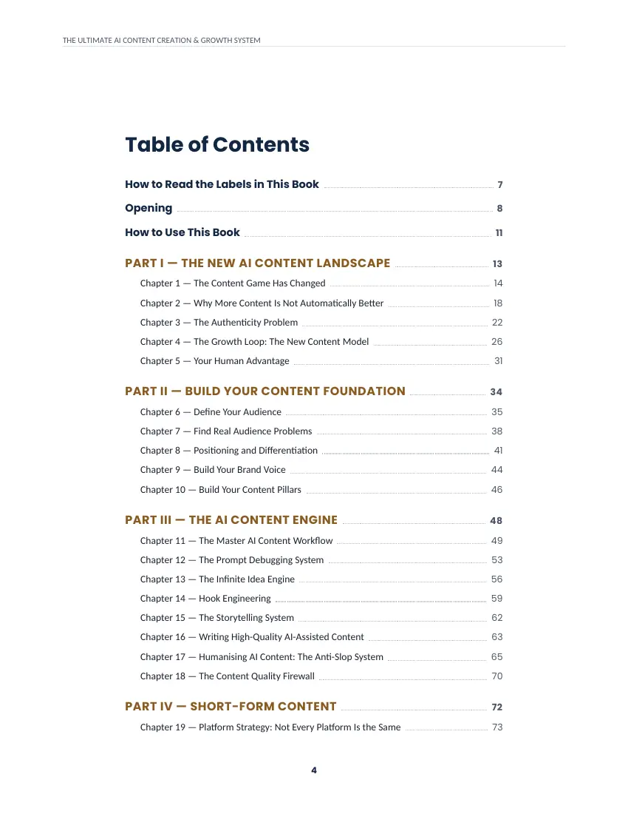
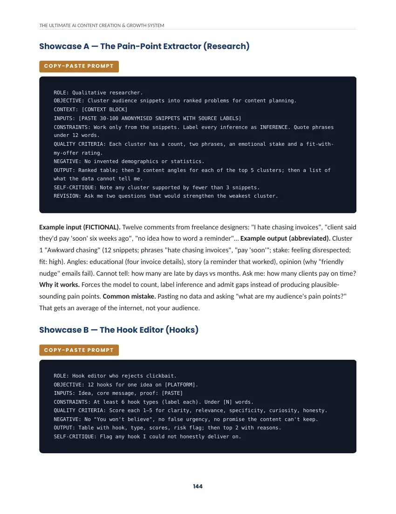
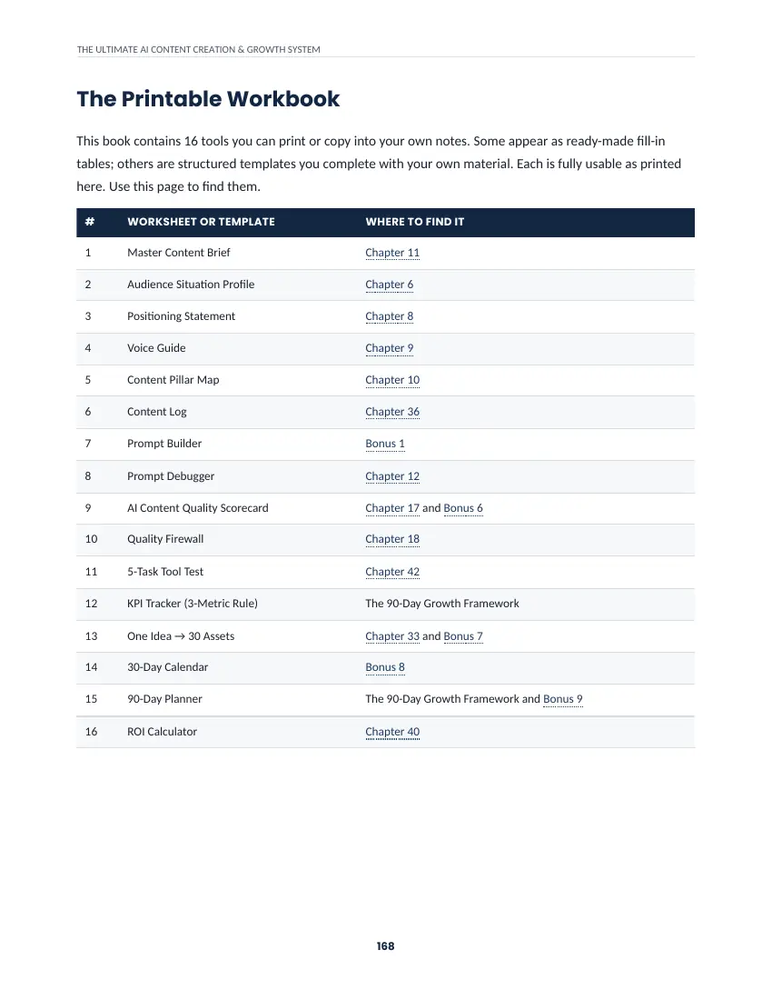

The new landscape
Part I · Chapters 1–5
Why more content is not automatically better, the authenticity problem, and your human advantage.
Two PDF editions of the same ebook: US Letter and A4.
The AI Content Playbook · 2027 Edition
A practical ebook for creators, freelancers, coaches and small businesses who want AI-assisted content that sounds like them, reaches the right people and connects to real business goals.
Cover illustration drawn for this website.
The problem
Everyone has access to the same AI tools, and the same prompts tend to produce the same friendly opening, three tidy points and upbeat close. Audiences notice. If any of this sounds familiar, you are in good company:
These are common challenges, not personal failings. The book argues that the old workflow, prompt → AI output → publish, stops at the exact point where the harder work begins.
The approach
The book replaces a straight line with the Growth Loop: sixteen steps that feed each other and return to research. AI can help at almost every step, but you decide who you serve, what you believe and what happens next.
Audience, problems, positioning, voice and pillars.
Ideas, hooks, storytelling, drafting, humanising and quality control.
Platform adaptation, search and repurposing.
Measurement, diagnosis, conversion and monetisation.
Then back to research, with what you learned.
The book observes that most people work only in the second layer, then wonder why distribution and feedback never happen. It does not suggest AI replaces your judgement, expertise or responsibility for checking what you publish.
What's inside
The structure below is taken from the book's own table of contents.
Part I · Chapters 1–5
Why more content is not automatically better, the authenticity problem, and your human advantage.
Part II · Chapters 6–10
Define your audience, find real problems, sharpen positioning, build a brand voice and content pillars.
Part III · Chapters 11–18
A master workflow, prompt debugging, idea and hook systems, storytelling, humanising AI writing and a quality firewall.
Parts IV–V · Chapters 19–25
Platform strategy, short video, carousels and captions, YouTube, articles and SEO, newsletters, podcasts and authority content.
Part VI · Chapters 26–29
Trust, lead generation, conversion, and systems for different business types.
Part VII · Chapters 30–32
Audience research, competitor gap analysis, trend-to-brand, social search, AI search and answer-engine discovery.
Part VIII · Chapters 33–35
A repurposing framework, batching and a weekly production system, plus a fully worked example that follows a fictional creator from research to a paying customer.
Part IX · Chapters 36–40
Metrics, a diagnosis system, common failure patterns, improving hooks and retention, and content ROI.
Parts X–XI · Chapters 41–44
An AI content operating system, a 5-task tool test, scaling without becoming generic, and a creator monetisation framework.
Part XII · Chapter 45
What will change, what will not, and what to re-check as platforms and tools move on.
114 numbered entries across 23 categories, including research, hooks, short-form, YouTube, email, repurposing, analytics, diagnosis, AI search, e-commerce, coaching and monetisation. Most are written out as compact prompts; some point to a full prompt printed elsewhere in the book. Five worked examples are shown in full.
Includes a Prompt Builder, 50 hook formulas, a Content Pillar Generator, a Content Audit Checklist, a Quality Scorecard, a One Idea → 30 Assets matrix, a 30-day calendar, a 90-day planner, and prompt packs for leads, sales, competitor gaps, AI search, repurposing, diagnosis, brand voice, personal brands, e-commerce, coaches and service businesses.
A day-by-day plan with Minimum (about 2–3 hours a week), Standard (about 5–8) and Advanced (10+) versions, from audience and positioning through publishing, analytics, diagnosis and your next sprint.
A five-phase framework built on a 3-metric rule, with review points and phase gates, plus 16 worksheets and templates you can print or copy into your own notes.
Illustrative uses
These are examples of how the method could be used. They are not customer stories or promised outcomes.
Build a repeatable publishing rhythm instead of starting from a blank page each week.
Turn client questions into a consistent content process that shows how you think.
Communicate expertise through trust-building content and clear next steps.
Plan content around the problems customers actually describe.
Turn one long-form idea into shorts, posts, an email and more.
Explain products and answer objections with content built for each stage of a buyer's thinking.
Connect content to an offer without sounding like a constant advert.
Illustrative example
A fictional example of the kind of progression the system follows. It is not a real case study and no results are implied.
Who it's for
Be honest with yourself
Preview
These are three real pages from the US Letter edition, shown as images. Page numbers refer to that edition; the A4 edition has the same content on a different page size.



Generating more of it is not the answer. Volume was the scarce thing five years ago. It is not scarce now. What is scarce is a clear point of view, an audience that trusts you, evidence that you know what you're talking about, and a way to turn attention into something useful for your business.
Claims in the book carry labels such as Fact, Research finding, Industry opinion, Practical recommendation, Time-sensitive or Durable, so you can tell evidence from opinion. Examples marked “Fictional” are illustrations, not case studies.
Why a system
A folder of prompts gives you things to paste. This book puts the thinking around them in one place: who the content is for, how to keep your voice, how to check quality, how to adapt for each platform, how to read the results and how to link content to an offer. You keep the book, work through it at your own pace and adapt it to your tools.
Get the ebook
2027 Edition · Tyvante Digital · Digital ebook (PDF)
Launch offer
Price not yet confirmed.
Get the ebook Alternative checkoutCheckout has not been set up yet, so purchases cannot be made on this page.
Questions
A connected method for AI-assisted content: audience research and positioning, a content workflow, humanising and quality control, platform adaptation, repurposing, measurement and diagnosis, conversion and monetisation.
It is written to be usable as a starting point, and the 30-day plan has a Minimum version for limited time. Experienced AI users can go straight to the parts they need, such as humanising, diagnosis or repurposing.
They are the same ebook in two page sizes. US Letter is common in the United States and Canada; A4 is standard in most other countries. Choose whichever prints or reads best for you.
45 chapters, a prompt vault of 114 numbered entries, 20 bonuses, a 30-day implementation plan, a 90-day growth framework and 16 printable worksheets and templates.
No. The book itself says it does not promise views, followers, income, sales or algorithm outcomes. Results depend on your audience, offer, market, effort and many factors outside anyone's control.
No. The method keeps you accountable for what you publish, and includes a quality firewall for checking AI-assisted work.
No. It is a book and toolkit of prompts, templates and plans. It is tool-agnostic, so you use it with the AI tools you already choose.
The book’s copyright page says it is for personal and commercial use by the purchaser, and that reselling, sharing or redistributing it without written permission is prohibited.
Purchase, delivery and refund details will be shown here once the seller confirms them.
You get a system, not just prompts, with a plan to run it for 30 days and see what it teaches you.
Get the ebook